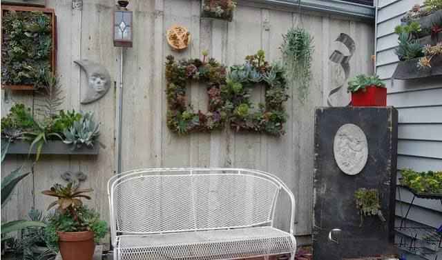
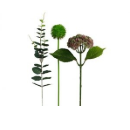
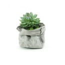
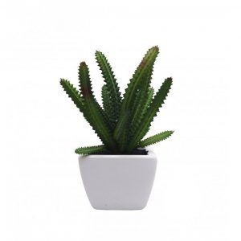
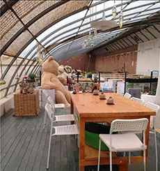
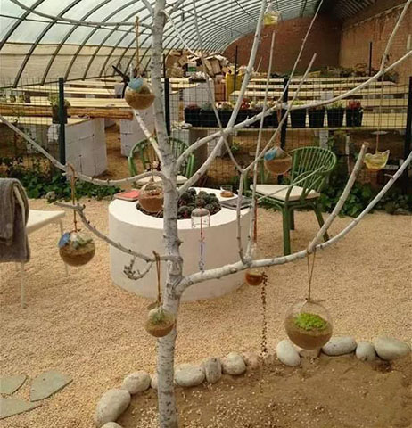
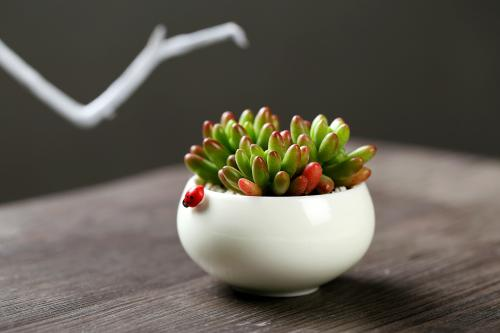
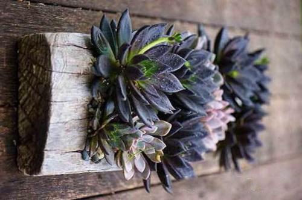
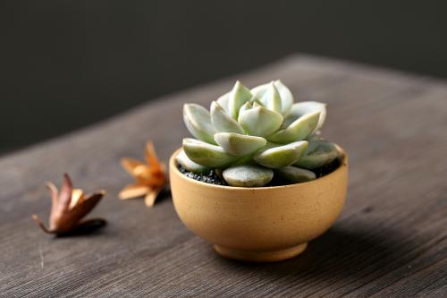

我们的流线式网页布局设计方案和可视化图文内容编辑模式让网站制作和维护成为一件轻松惬意的事。
起飞页提供了海量精美网站模板和成品网站，
起飞页的核心竞争力来自于它集流线式布局方案与可视化内容编辑于一体，
支持打字传图、自由拖拽，
不需要专业编写代码，也没有其他建站工具的层叠式烦恼，您可以随心所欲创建区块、
添加组件…
手工展示

多肉手捧花
备注

多肉手捧花
备注

多肉手捧花
备注

多肉手捧花
备注
活动

山中花店的活动中 稀有种子如何获得？
发布日期：2017-05-23
从一九四七年巴黎蒙田大街30号New Look的展出开始，Dior就成为高级女装的代名词, 继承了法国高级女装的传统，始终保持华丽的设计路线，做工精细，迎合上流社会成熟女性的审
天气干燥，花店老板推荐制氧绿植
发布日期：2017-05-23
秋天的拉萨，天气比较干燥，这个时候在家里养一些可以制造氧气和 水分的植物大有好处。记者走访多个花店后发现，很多店老板都会同时提到一种制氧植物——红豆杉 。红豆杉有“植物增氧机”之称...

养护
多肉春夏秋冬养护
多肉植物“史上最萌植物”，可是也很难伺候好。阳光、水分、温度都是需要注意的因素。 不同季节也有不同的对待哦，那么，多肉植物在春夏秋冬四季中怎么养？ 下面我们一起来了解一下吧。 春季多肉植物怎么养二月是早春，在北方，还寒冷，因此按冬天的方式养护。在南方，温度虽有10多度， 但不稳定，时有寒流，寒流时不可搬出到室外，也不可随意打开温室棚；阳春三月，"冬型种"、春秋季种 迎来生长季节，“夏型种”也会苏醒。此时，不急搬出室外，先开窗透气，若遇冷空气，还要关紧门窗。4月， 是一年黄金生长季节。春秋冬种生长继续，夏型种生长开始。合适的气温时可搬出去。在春季浇水原则一： “不干不浇，浇则浇透”；。 了解更多

多肉植物常用的杀虫灭菌药
夏季是多肉植物病害和虫害的高峰期，下文的作者joereil，为大家整理一些多肉植物用得上杀菌剂和杀虫药，注明了这些药物的防治对象，特点，对人体的危害性都罗列得比较清楚，希望对大家有所帮助。 本文的杀虫灭菌药主要针对纯品，一些复方制剂（如蚧必治，护花神之类）因品种过多，成分复杂，并没有一一罗列。 多菌灵 25%粉 稀释200-500倍 高效低毒内吸性杀菌剂，有内吸治疗和保护作用。 对人、畜、鱼类、蜜蜂等低毒。 对皮肤和眼睛有刺激，经口中毒出现头昏、恶心、呕吐；可能引起遗传性基因损害；可能损害生育能力；可能对胎儿造成伤害；对水生生物有极高毒性，可能对水体环境产生长期不良影响 了解更多

多肉控水和不控水，颜值差的可不是一点两点！
多多肉植物本身就非常的梦，受到很多花友的喜爱，而养出状态的多肉植物那就更美了，那么问题来了， 怎么才能将多肉养出状态呢！ 想要让多肉长得美，首先要控制浇水和保证充足的光照，当然这边所说的控水其实对多肉状态起不到决定性的作用，只能起到锦上添花的效果。 当多肉的根系生长的良好， 这时候给多肉控水可以让多肉叶片长的更紧凑，同时也能让多肉叶片储存更多的水分，随着多肉的生长， 就会逐渐长成粗壮的枝干，比较容易养出老桩的感觉。 了解更多
